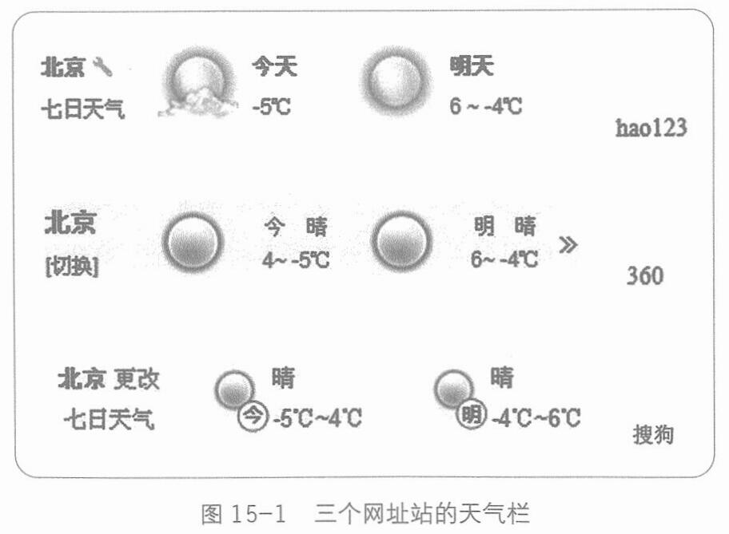

而“简单”这个词，几乎是所有工具之争的制高点。
就比如做网址导航站，但凡你是一个有点自我要求的精英，不甘心平凡如泥土，总得追求点好看，追求点变化。这样一来，你就会输给hao123，因为你没有改变服务的本质，只是增加了复杂。
网址导航站这件事，没有人可以超越hao123，是因为没有人可以比它更简单。
我们看一个微小的局部——2012年，中国三大网址导航站hao123、360和搜狗上一个小小的角落, “天气”(见图15-1)。

能感受到差别吗?
这种微小差别的叠加，就会让用户形成不愿更改的使用习惯。乔布斯说，细节的累加成就独特气质。hao123就是用它的简单，累加出了过亿用户的懒得更换首页。
426